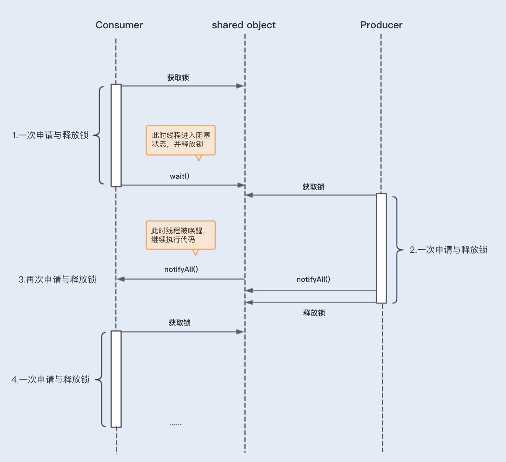

- 00 开篇词你为什么需要学习并发编程？.md.html
- 01 如何制定性能调优标准？.md.html
- 02 如何制定性能调优策略？.md.html
- 03 字符串性能优化不容小觑，百M内存轻松存储几十G数据.md.html
- 04 慎重使用正则表达式.md.html
- 05 ArrayList还是LinkedList？使用不当性能差千倍.md.html
- 06 Stream如何提高遍历集合效率？.md.html
- 07 深入浅出HashMap的设计与优化.md.html
- 08 网络通信优化之IO模型：如何解决高并发下IO瓶颈？.md.html
- 09 网络通信优化之序列化：避免使用Java序列化.md.html
- 10 网络通信优化之通信协议：如何优化RPC网络通信？.md.html
- 11 答疑课堂：深入了解NIO的优化实现原理.md.html
- 12 多线程之锁优化（上）：深入了解Synchronized同步锁的优化方法.md.html
- 13 多线程之锁优化（中）：深入了解Lock同步锁的优化方法.md.html
- 14 多线程之锁优化（下）：使用乐观锁优化并行操作.md.html
- 15 多线程调优（上）：哪些操作导致了上下文切换？.md.html
- 16 多线程调优（下）：如何优化多线程上下文切换？.md.html
- 17 并发容器的使用：识别不同场景下最优容器.md.html
- 18 如何设置线程池大小？.md.html
- 19 如何用协程来优化多线程业务？.md.html
- 20 磨刀不误砍柴工：欲知JVM调优先了解JVM内存模型.md.html
- 21 深入JVM即时编译器JIT，优化Java编译.md.html
- 22 如何优化垃圾回收机制？.md.html
- 23 如何优化JVM内存分配？.md.html
- 24 内存持续上升，我该如何排查问题？.md.html
- 25 答疑课堂：模块四热点问题解答.md.html
- 26 单例模式：如何创建单一对象优化系统性能？.md.html
- 27 原型模式与享元模式：提升系统性能的利器.md.html
- 28 如何使用设计模式优化并发编程？.md.html
- 29 生产者消费者模式：电商库存设计优化.md.html
- 30 装饰器模式：如何优化电商系统中复杂的商品价格策略？.md.html
- 31 答疑课堂：模块五思考题集锦.md.html
- 32 MySQL调优之SQL语句：如何写出高性能SQL语句？.md.html
- 33 MySQL调优之事务：高并发场景下的数据库事务调优.md.html
- 34 MySQL调优之索引：索引的失效与优化.md.html
- 35 记一次线上SQL死锁事故：如何避免死锁？.md.html
- 36 什么时候需要分表分库？.md.html
- 37 电商系统表设计优化案例分析.md.html
- 38 数据库参数设置优化，失之毫厘差之千里.md.html
- 39 答疑课堂：MySQL中InnoDB的知识点串讲.md.html
- 41 如何设计更优的分布式锁？.md.html
- 42 电商系统的分布式事务调优.md.html
- 43 如何使用缓存优化系统性能？.md.html
- 44 记一次双十一抢购性能瓶颈调优.md.html
- 加餐 什么是数据的强、弱一致性？.md.html
- 加餐 推荐几款常用的性能测试工具.md.html
- 答疑课堂：模块三热点问题解答.md.html
- 结束语 栉风沐雨，砥砺前行！.md.html
16 多线程调优（下）：如何优化多线程上下文切换？
你好，我是刘超。
通过上一讲的讲解，相信你对上下文切换已经有了一定的了解了。如果是单个线程，在 CPU 调用之后，那么它基本上是不会被调度出去的。如果可运行的线程数远大于 CPU 数量，那么操作系统最终会将某个正在运行的线程调度出来，从而使其它线程能够使用 CPU ，这就会导致上下文切换。
还有，在多线程中如果使用了竞争锁，当线程由于等待竞争锁而被阻塞时，JVM 通常会将这个锁挂起，并允许它被交换出去。如果频繁地发生阻塞，CPU 密集型的程序就会发生更多的上下文切换。
那么问题来了，我们知道在某些场景下使用多线程是非常必要的，但多线程编程给系统带来了上下文切换，从而增加的性能开销也是实打实存在的。那么我们该如何优化多线程上下文切换呢？这就是我今天要和你分享的话题，我将重点介绍几种常见的优化方法。
竞争锁优化
大多数人在多线程编程中碰到性能问题，第一反应多是想到了锁。
多线程对锁资源的竞争会引起上下文切换，还有锁竞争导致的线程阻塞越多，上下文切换就越频繁，系统的性能开销也就越大。由此可见，在多线程编程中，锁其实不是性能开销的根源，竞争锁才是。
第 11～13 讲中我曾集中讲过锁优化，我们知道锁的优化归根结底就是减少竞争。这讲中我们就再来总结下锁优化的一些方式。
1. 减少锁的持有时间
我们知道，锁的持有时间越长，就意味着有越多的线程在等待该竞争资源释放。如果是 Synchronized 同步锁资源，就不仅是带来线程间的上下文切换，还有可能会增加进程间的上下文切换。
在第 12 讲中，我曾分享过一些更具体的方法，例如，可以将一些与锁无关的代码移出同步代码块，尤其是那些开销较大的操作以及可能被阻塞的操作。
- 优化前
public synchronized void mySyncMethod(){
businesscode1();
mutextMethod();
businesscode2();
}
- 优化后
public void mySyncMethod(){
businesscode1();
synchronized(this)
{
mutextMethod();
}
businesscode2();
}
2. 降低锁的粒度
同步锁可以保证对象的原子性，我们可以考虑将锁粒度拆分得更小一些，以此避免所有线程对一个锁资源的竞争过于激烈。具体方式有以下两种：
- 锁分离
与传统锁不同的是，读写锁实现了锁分离，也就是说读写锁是由“读锁”和“写锁”两个锁实现的，其规则是可以共享读，但只有一个写。
这样做的好处是，在多线程读的时候，读读是不互斥的，读写是互斥的，写写是互斥的。而传统的独占锁在没有区分读写锁的时候，读写操作一般是：读读互斥、读写互斥、写写互斥。所以在读远大于写的多线程场景中，锁分离避免了在高并发读情况下的资源竞争，从而避免了上下文切换。
- 锁分段
我们在使用锁来保证集合或者大对象原子性时，可以考虑将锁对象进一步分解。例如，我之前讲过的 Java1.8 之前版本的 ConcurrentHashMap 就使用了锁分段。
3. 非阻塞乐观锁替代竞争锁
volatile 关键字的作用是保障可见性及有序性，volatile 的读写操作不会导致上下文切换，因此开销比较小。 但是，volatile 不能保证操作变量的原子性，因为没有锁的排他性。
而 CAS 是一个原子的 if-then-act 操作，CAS 是一个无锁算法实现，保障了对一个共享变量读写操作的一致性。CAS 操作中有 3 个操作数，内存值 V、旧的预期值 A 和要修改的新值 B，当且仅当 A 和 V 相同时，将 V 修改为 B，否则什么都不做，CAS 算法将不会导致上下文切换。Java 的 Atomic 包就使用了 CAS 算法来更新数据，就不需要额外加锁。
上面我们了解了如何从编码层面去优化竞争锁，那么除此之外，JVM 内部其实也对 Synchronized 同步锁做了优化，我在 12 讲中有详细地讲解过，这里简单回顾一下。
在 JDK1.6 中，JVM 将 Synchronized 同步锁分为了偏向锁、轻量级锁、偏向锁以及重量级锁，优化路径也是按照以上顺序进行。JIT 编译器在动态编译同步块的时候，也会通过锁消除、锁粗化的方式来优化该同步锁。
wait/notify 优化
在 Java 中，我们可以通过配合调用 Object 对象的 wait() 方法和 notify() 方法或 notifyAll() 方法来实现线程间的通信。
在线程中调用 wait() 方法，将阻塞等待其它线程的通知（其它线程调用 notify() 方法或 notifyAll() 方法），在线程中调用 notify() 方法或 notifyAll() 方法，将通知其它线程从 wait() 方法处返回。
下面我们通过 wait() / notify() 来实现一个简单的生产者和消费者的案例，代码如下：
public class WaitNotifyTest {
public static void main(String[] args) {
Vector<Integer> pool=new Vector<Integer>();
Producer producer=new Producer(pool, 10);
Consumer consumer=new Consumer(pool);
new Thread(producer).start();
new Thread(consumer).start();
}
}
/**
* 生产者
* @author admin
*
*/
class Producer implements Runnable{
private Vector<Integer> pool;
private Integer size;
public Producer(Vector<Integer> pool, Integer size) {
this.pool = pool;
this.size = size;
}
public void run() {
for(;;){
try {
System.out.println(" 生产一个商品 ");
produce(1);
} catch (InterruptedException e) {
// TODO Auto-generated catch block
e.printStackTrace();
}
}
}
private void produce(int i) throws InterruptedException{
while(pool.size()==size){
synchronized (pool) {
System.out.println(" 生产者等待消费者消费商品, 当前商品数量为 "+pool.size());
pool.wait();// 等待消费者消费
}
}
synchronized (pool) {
pool.add(i);
pool.notifyAll();// 生产成功，通知消费者消费
}
}
}
/**
* 消费者
* @author admin
*
*/
class Consumer implements Runnable{
private Vector<Integer> pool;
public Consumer(Vector<Integer> pool) {
this.pool = pool;
}
public void run() {
for(;;){
try {
System.out.println(" 消费一个商品 ");
consume();
} catch (InterruptedException e) {
// TODO Auto-generated catch block
e.printStackTrace();
}
}
}
private void consume() throws InterruptedException{
while(pool.isEmpty()){
synchronized (pool) {
System.out.println(" 消费者等待生产者生产商品, 当前商品数量为 "+pool.size());
pool.wait();// 等待生产者生产商品
}
}
synchronized (pool) {
pool.remove(0);
pool.notifyAll();// 通知生产者生产商品
}
}
}
wait/notify 的使用导致了较多的上下文切换
结合以下图片，我们可以看到，在消费者第一次申请到锁之前，发现没有商品消费，此时会执行 Object.wait() 方法，这里会导致线程挂起，进入阻塞状态，这里为一次上下文切换。
当生产者获取到锁并执行 notifyAll() 之后，会唤醒处于阻塞状态的消费者线程，此时这里又发生了一次上下文切换。
被唤醒的等待线程在继续运行时，需要再次申请相应对象的内部锁，此时等待线程可能需要和其它新来的活跃线程争用内部锁，这也可能会导致上下文切换。
如果有多个消费者线程同时被阻塞，用 notifyAll() 方法，将会唤醒所有阻塞的线程。而某些商品依然没有库存，过早地唤醒这些没有库存的商品的消费线程，可能会导致线程再次进入阻塞状态，从而引起不必要的上下文切换。

优化 wait/notify 的使用，减少上下文切换
首先，我们在多个不同消费场景中，可以使用 Object.notify() 替代 Object.notifyAll()。 因为 Object.notify() 只会唤醒指定线程，不会过早地唤醒其它未满足需求的阻塞线程，所以可以减少相应的上下文切换。
其次，在生产者执行完 Object.notify() / notifyAll() 唤醒其它线程之后，应该尽快地释放内部锁，以避免其它线程在唤醒之后长时间地持有锁处理业务操作，这样可以避免被唤醒的线程再次申请相应内部锁的时候等待锁的释放。
最后，为了避免长时间等待，我们常会使用 Object.wait (long）设置等待超时时间，但线程无法区分其返回是由于等待超时还是被通知线程唤醒，从而导致线程再次尝试获取锁操作，增加了上下文切换。
这里我建议使用 Lock 锁结合 Condition 接口替代 Synchronized 内部锁中的 wait / notify，实现等待／通知。这样做不仅可以解决上述的 Object.wait(long) 无法区分的问题，还可以解决线程被过早唤醒的问题。
Condition 接口定义的 await 方法 、signal 方法和 signalAll 方法分别相当于 Object.wait()、 Object.notify() 和 Object.notifyAll()。
合理地设置线程池大小，避免创建过多线程
线程池的线程数量设置不宜过大，因为一旦线程池的工作线程总数超过系统所拥有的处理器数量，就会导致过多的上下文切换。更多关于如何合理设置线程池数量的内容，我将在第 18 讲中详解。
还有一种情况就是，在有些创建线程池的方法里，线程数量设置不会直接暴露给我们。比如，用 Executors.newCachedThreadPool() 创建的线程池，该线程池会复用其内部空闲的线程来处理新提交的任务，如果没有，再创建新的线程（不受 MAX_VALUE 限制），这样的线程池如果碰到大量且耗时长的任务场景，就会创建非常多的工作线程，从而导致频繁的上下文切换。因此，这类线程池就只适合处理大量且耗时短的非阻塞任务。
使用协程实现非阻塞等待
相信很多人一听到协程（Coroutines），马上想到的就是 Go 语言。协程对于大部分 Java 程序员来说可能还有点陌生，但其在 Go 中的使用相对来说已经很成熟了。
协程是一种比线程更加轻量级的东西，相比于由操作系统内核来管理的进程和线程，协程则完全由程序本身所控制，也就是在用户态执行。协程避免了像线程切换那样产生的上下文切换，在性能方面得到了很大的提升。协程在多线程业务上的运用，我会在第 18 讲中详述。
减少 Java 虚拟机的垃圾回收
我们在上一讲讲上下文切换的诱因时，曾提到过“垃圾回收会导致上下文切换”。
很多 JVM 垃圾回收器（serial 收集器、ParNew 收集器）在回收旧对象时，会产生内存碎片，从而需要进行内存整理，在这个过程中就需要移动存活的对象。而移动内存对象就意味着这些对象所在的内存地址会发生变化，因此在移动对象前需要暂停线程，在移动完成后需要再次唤醒该线程。因此减少 JVM 垃圾回收的频率可以有效地减少上下文切换。
总结
上下文切换是多线程编程性能消耗的原因之一，而竞争锁、线程间的通信以及过多地创建线程等多线程编程操作，都会给系统带来上下文切换。除此之外，I/O 阻塞以及 JVM 的垃圾回收也会增加上下文切换。
总的来说，过于频繁的上下文切换会影响系统的性能，所以我们应该避免它。另外，我们还可以将上下文切换也作为系统的性能参考指标，并将该指标纳入到服务性能监控，防患于未然。
思考题
除了我总结中提到的线程间上下文切换的一些诱因，你还知道其它诱因吗？对应的优化方法又是什么？